<!doctype html><html lang="en"><meta charset="utf-8"><meta name="viewport" content="width=device-width,initial-scale=1"><title>Nikita — GitHub profile preview</title><style>body{margin:0;background:#fff;color:#282722;font-family:Arial,sans-serif}main{max-width:880px;margin:36px auto;padding:20px}img{display:block;width:100%;height:auto;margin-bottom:14px}.tiles{display:flex;gap:1.25%;margin-bottom:14px}.tiles a{width:32.5%}.tiles img{margin:0}a{color:#2455ed}h2{font-size:20px;font-weight:500;margin:28px 0 16px}footer{font-size:13px;margin:25px 0}</style><main><div class="tiles"><a href="https://github.com/tot-nekit?tab=repositories"></a><a href="https://github.com/tot-nekit/DiscordBot"></a><a href="https://github.com/tot-nekit?tab=repositories"></a></div><h2>Selected work</h2><a href="https://github.com/tot-nekit/orbita"></a><a href="https://github.com/tot-nekit/vstrecha"></a><a href="https://github.com/tot-nekit/DiscordBot"></a><footer>Built with SVG. Updated daily from GitHub.</footer></main></html>